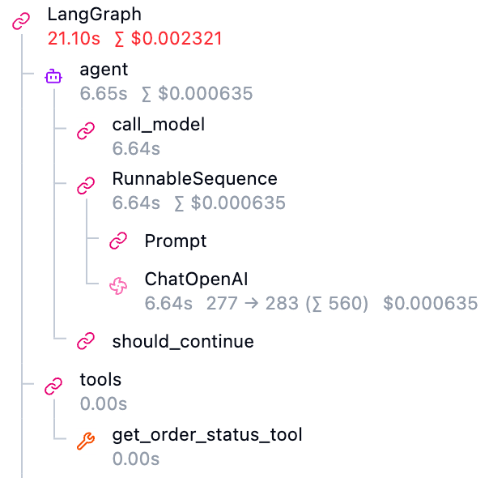

단 한 번의 호출 뒷단에서 자율적으로 움직이는 AI 에이전트의 Thought-Action-Observation 루프를 실시간 모니터링하여 프롬프트, 도구 인자, 지연율, 비용을 정밀 추적(Tracing)한다.
이번 포스트에서는 LangChain 및 LangGraph 기반의 AI 에이전트에 Langfuse 트레이싱을 연동하고 실시간으로 내부 행동 흐름을 디버깅하는 방법을 알아본다.
자율적인 멀티스텝 의사결정을 수행하는 에이전트 디버깅의 필수 구성 요소이다.
사용자 메시지 이면에 내재된 LLM 호출 및 도구 실행 스텝을 트리 구조로 시각화함.
에이전트 전체 실행 흐름 중 병목이 발생하는 API 호출 구간을 밀리초(ms) 단위로 진단함.
단계별 LLM 입력/출력 토큰을 실시간 집계하여 누적 실행 비용을 즉시 산출함.
프롬프트 텍스트를 코드와 분리하여 대시보드 상에서 버전별 성능을 교차 평가함.
네트워크 레이턴시를 최소화하기 위한 동아시아 리전 세팅 및 API Key 획득 절차이다.
| 단계 | 핵심 작업 내용 | 세부 설정 가이드 및 팁 |
|---|---|---|
| Step 1 | Langfuse Cloud 가입 | 공식 홈페이지 접속 후 가입 및 소셜 로그인 진행함. |
| Step 2 | Japan(일본) 리전 지정 | 가입 완료 단계 또는 프로젝트 선택 화면에서 Region을 Japan(Tokyo)으로 지정하여 레이턴시 최소화함. |
| Step 3 | Project 신규 개설 | 대시보드 상의 Create Project 버튼으로 새 프로젝트(예: SSAFY_AI) 개설함. |
| Step 4 | API Key 3종 세트 발급 | 프로젝트의 Settings ➡️ API Keys 메뉴에서 Key 정보를 복사해 안전한 곳에 보관함. |
Langfuse 연동을 위한 파이썬 패키지 설치와 API Key를 안전하게 보관하는 로컬 .env 설정 방법이다.
LANGFUSE_SECRET_KEY는 외부로 유출될 경우 모니터링 원격 제어 및 로그 데이터 오염을 유발할 수 있으므로, Git 등 형상 관리 도구에 업로드되지 않도록 .gitignore 파일에 .env가 등록되어 있는지 반드시 확인한다.
LangChain / LangGraph 실행 파이프라인에 콜백 핸들러를 주입하여 실시간 추적 로그를 전송하는 구현이다.
연동 완료 후 대시보드 웹 환경에서 관찰해야 할 에이전트의 4대 관측 지표이다.
| 지표 항목 | 주요 역할 | 디버깅 가이드라인 |
|---|---|---|
| Trace Tree | 에이전트 실행 전체 계층도 | 사용자 메시지가 각 Graph Node(LLM ➡️ Tool ➡️ LLM)를 거쳐 가며 어떻게 전파되고 갱신되는지 화살표 흐름으로 검증함. |
| Span (도구 실행) | 단일 작업 실행 단위 (Span) | [정의] 단일 함수 실행이나 API 호출 등의 개별 작업 단위임. 특정 도구 함수가 트리거될 때 입력 파라미터(Arguments)가 올바른 형식으로 주입되었는지, 결과가 유효하게 반환되었는지 검증함. |
| Generation (LLM 생성) | LLM 호출 및 생성 단위 | [정의] LLM이 완성문을 생성(Generate)해 낸 API 호출 단위로, 대화 상의 AI 역할인 Assistant 메시지 결과를 담음. 모델이 의사결정을 위해 수행한 생각(Thought)과 프롬프트 템플릿의 정상 바인딩 여부를 실시간 비교 검수함. |
| Token & Latency Cost | 비용 및 지연 누적 차트 | 무한 루프에 빠진 노드가 없는지 확인하고, 지나치게 토큰을 과소비하여 요금 폭탄을 발생시키는 비효율적인 특정 프롬프트 노드를 진단하여 최적화함. |
Langfuse 웹 콘솔의 트레이싱 트리 화면에서 관측되는 개별 범용 작업 단위(Span) 및 특수 LLM 생성 단위(Generation)가 에이전트 아키텍처 상 무엇을 의미하는지 비교 대조한 명세이다.
| 콘솔 노드명 | 물리적 역할 및 의미 |
|---|---|
| LangGraph | Trace 타입으로 에이전트 전체 실행의 총괄 트레이스. 총 레이턴시와 누적 모델 토큰 비용이 집계됨. |
| agent | Node 타입으로 LLM을 호출하여 다음 수행 단계(Plan)를 결정하는 생각 노드 실행 구간. |
|
call_model
/ RunnableSequence
|
Chain 타입으로 LLM 호출을 위한 프롬프트 조립 및 ChatOpenAI 인터페이스 연결 파이프라인 실행 구간. |
| Prompt | Span 타입으로 LLM에 주입되는 바인딩 프롬프트 템플릿 빌드 구간. |
| ChatOpenAI | Generation 타입으로 LLM API 통신을 거쳐 완성 답변을 생성(Generate)하는 특수 Span. |
| should_continue | Edge 타입으로 도구 호출 여부를 분석하여 다음 노드를 결정하는 조건부 엣지(의사결정 플래닝) 작동 구간. |
| tools | Node 타입으로 도구 노드를 호출하고 바인딩된 파이썬 함수를 실제 구동해 결과를 수집하는 실행 구간. |
